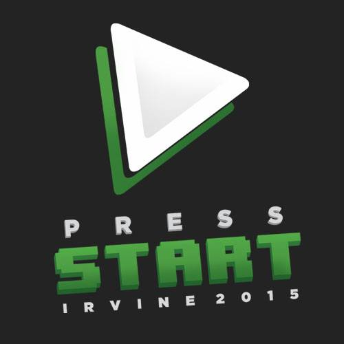

Press Start: Irvine 2015
osu! UCI be hosting an osu! tournament at Press Start: Irvine 2015, a LAN that will be coming to Irvine next month. The LAN takes place May 9-10th in the Donald Bren Event Center. There'll be a lot of games and tournaments with a lot of great prizes, so make sure to check out the entire event! The osu! tournament will play only on the 10th, so you can join other tournaments the day before. To register specifically for the osu! tournament, follow these two steps:
- Register for the osu! tournament:
- Reserve a seat for the LAN. Enter the promocode "EARLYBIRD" or "MSIDRAGON" for a $15 discount and pay $9 instead of $24 for basic admission. The tournaments are free to watch, but entering as a competitor requires a seat pass.
Tournament Structure
- 2 swiss groups will be made based on the rank seeding of players; see an example of one swiss group
- Each swiss group will play 4 rounds
- The top 4 of each swiss group advances to a single elimination bracket; see our example bracket
- The top 8 bracket will also be streamed on Twitch
- Bo3 swiss groups, Bo5 top 8 quarter finals, Bo7 semifinals, Bo9 grand finals
Rules
- Coin flip begins every match
- Coin flip loser decides warm up map (<5 minutes)
- Coin flip winner decides first map
- Thereafter, loser decides next map
- No map bans
- Tournament rules and structure are subject to alterations by the administrators; administrators have the final say in any disputes
- Each mod can only be selected once by a respective player
- New players may sign up during the setup period provided that spots still remain or become vacant
- Missing a time slot (registration, matches, etc.) automatically forfeits your spot; please show up a few minutes before your alotted time slot so we can administer signing sheets and let you setup in time
- The signing sheet must be signed and returned by the referee and the players for a match to be considered valid
Prizing
- 1st: 12 months of osu! supporter, mechanical numpad, Wacom CTL 480
- 2nd: 6 months of osu! supporter, mechanical numpad
- 3-4th: 4 months of osu! supporter
- 5-8th: 1 month osu! supporter
All top 8 placers will be memorialized on the osu! UCI website.
Map Pool
Download the map pool or download the map pool with a fresh osu! client below. The second option has beatmap collections already set up within the game for each round and mod. To reduce the size of the downloads, all beatmap videos, storyboard, and skins have been removed. Also note that all the collection making and compiling was done by hand, so there may be errors here and there. Please contact any of the officers of the club if there are any issues.
Swiss:
No Mod
Tiebreaker (Free Mod)
Quarter Finals:
No Mod
Hard Rock
Hidden
Double Time
Tiebreaker (Free Mod)
Semi Finals:
No Mod
Hard Rock
Hidden
Double Time
Tiebreaker (Free Mod)
Grand Finals:
No Mod
Hard Rock
Hidden
Double Time
Tiebreaker (Free Mod)
Schedule
May 10th
- 09:00-10:00AM: Volunteer setup, staff check, stream check
- 09:00-11:30AM: Player check-in, warmup
- 11:30-12:00PM: Swiss groups finalization
- 12:00-12:30PM: Group 1 Round 1
- 12:30-01:00PM: Group 2 Round 1
- 01:00-01:30PM: Group 1 Round 2
- 01:30-02:00PM: Group 2 Round 2
- 02:00-02:30PM: Group 1 Round 3
- 02:30-03:00PM: Group 2 Round 3
- 03:00-03:30PM: Group 1 Round 4
- 03:30-04:00PM: Group 2 Round 4
- 04:00-04:30PM: Break before brackets
- 04:30-05:30PM: Quarter finals
- 05:30-06:30PM: Semi finals
- 06:30-07:30PM: Grand finals
Contact
If you have any questions or concerns, contact an osu! UCI officer. Jimmy and I(Max) are the main ones in charge of the tournament, but any of the officers will be happy to help out. We'll be manning the osu! booth the day of to handle administration and questions.